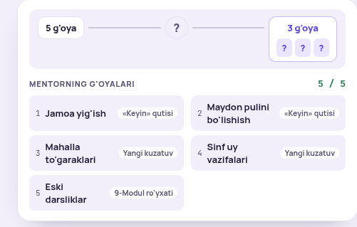
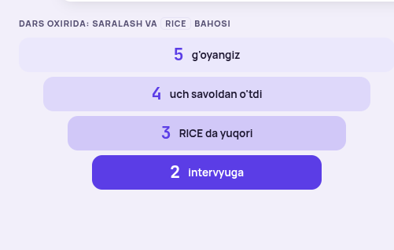
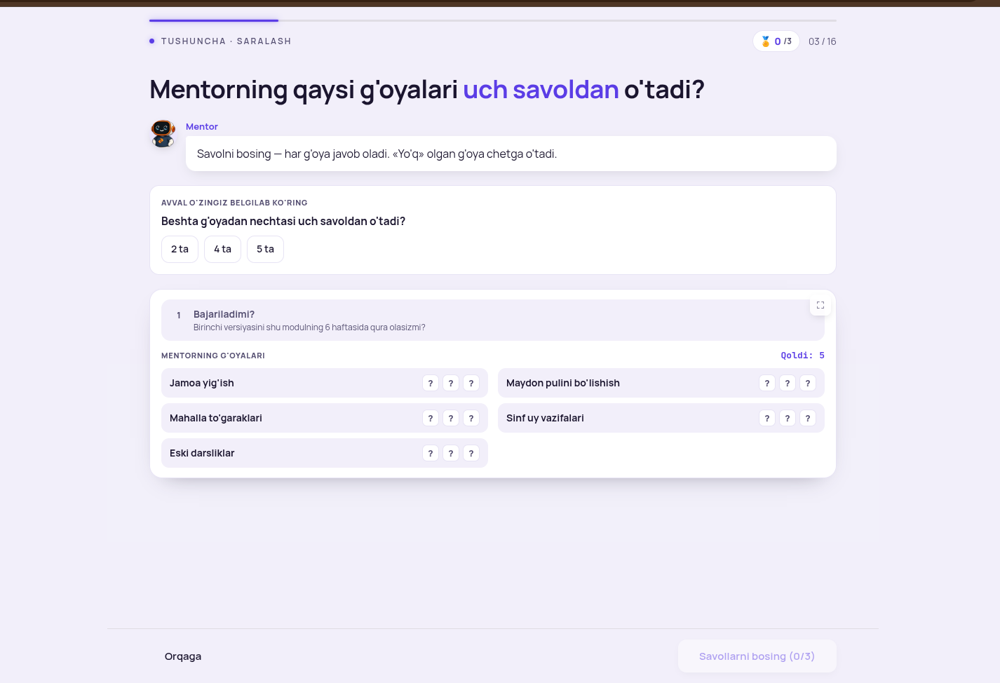
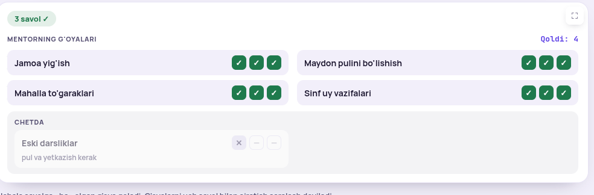
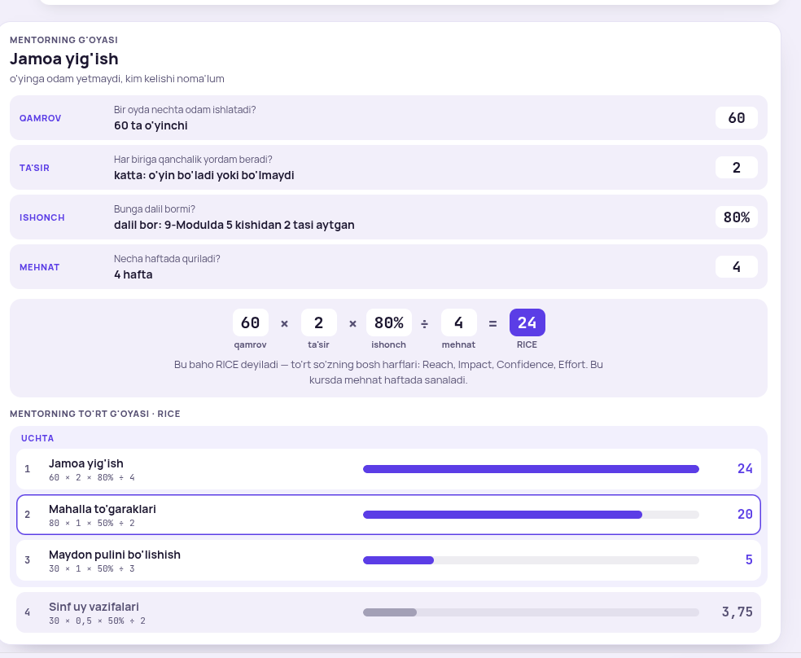
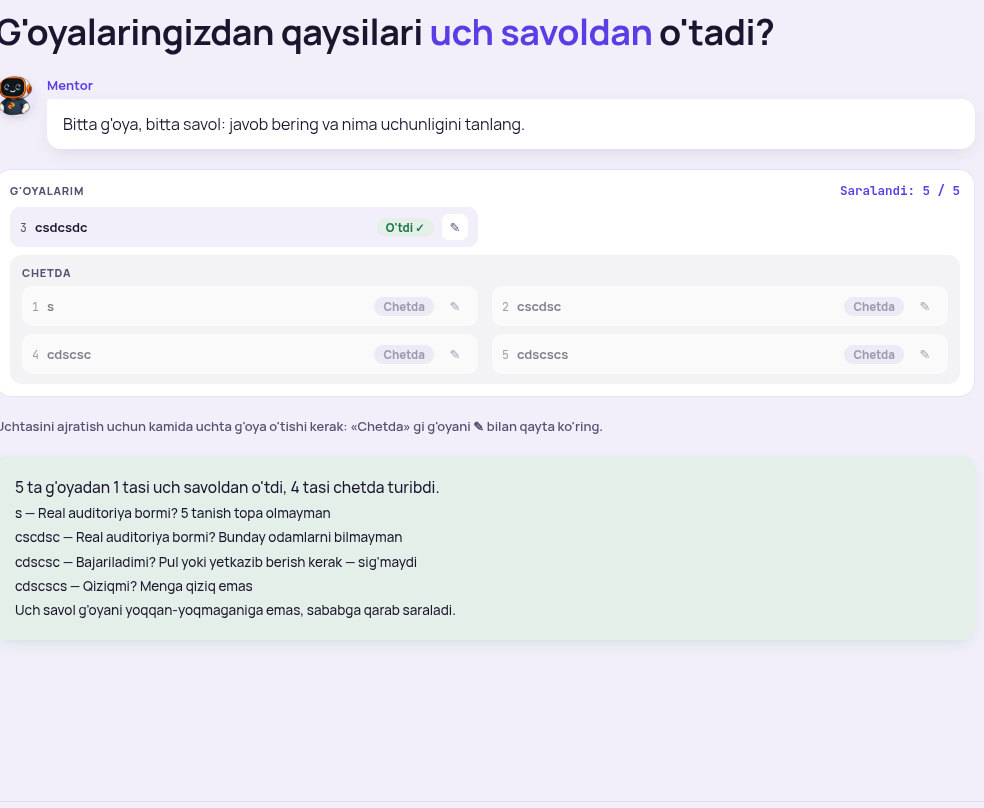
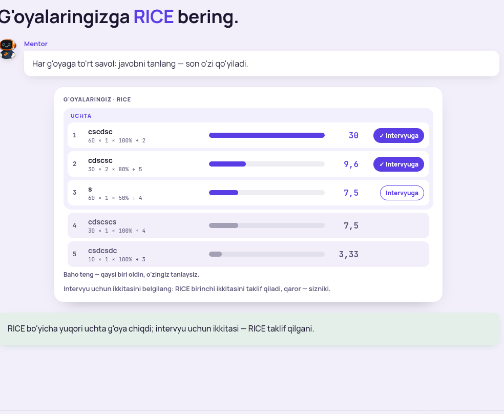

2-dars ko'rigi: nima tushunarsiz, nima taklif qilinadi
Har bandda sizning so'zingiz, hozirgi surat, tashxis va taklif-namuna. Namunalar dars palitrasida chizilgan, kod hali tegilmagan. Tanlovni band raqami bilan ayting («193 A, 195 A…») yoki «hammasi A».
Darsdan o'quvchi nima oladi (sizning 2-savolingizga): o'zining 5 g'oyasidan 3 tasi RICE soni bilan, 2 tasi intervyuga belgilangan, har «chetda» ga bitta sabab. Shu uchlik 3-darsga (intervyu) kiradi. Darsda hozir ikki son yashaydi: nom «uchtasi qoladi», oxiri «ikkitasi intervyuga». Taklif 194 da shuni bitta gapga bog'laydi.
F-1015-193 · 0-ekran (kirish kartasi)
«5 g'oya → ? → 3 g'oya» yo'li — nimaligini his qilib bo'lmaydi
«manashuni ko'rdim lekin tushunarsiz-da, nimaligini his qilolmadim»

Hozir: tepada «5 g'oya — ? — 3 g'oya ? ? ?» yo'li, ostida Mentorning 5 g'oyasi manba yorlig'i bilan.
Tashxis. «?» belgilari hali tushuntirilmagan narsani so'rab turibdi. O'quvchi birinchi ekranda nima qilishini bilmaydi: bu savolmi, bosiladimi, chizmami. Manba yorliqlari («Keyin» qutisi, Yangi kuzatuv) 1-dars so'zlari, lekin bu yerda savolga aloqasi yo'q.
Taklif A — yo'l olinadi, bitta gap va ro'yxat
Mentorning g'oyalari · 5
Dars oxirida shulardan uchtasi qoladi. Qaysilari — savollar va sonlar aytadi.
1Jamoa yig'ish
2Maydon pulini bo'lishish
3Mahalla to'garaklari
4Sinf uy vazifalari
5Eski darsliklar
AYo'l va manba yorliqlari olinadi. Kartada bitta gap + 5 g'oya nomi. Kirish savoli va variantlar o'zgarmaydi.
BYo'l qoladi, lekin so'z bilan: «5 g'oya → savollar va sonlar → 3 g'oya», «?» yo'q.
F-1015-194 · 1-ekran (reja, voronka)
Voronka yaxshi, lekin «qo'lingizda nima qoladi» aytilmagan
«yomon emas, yana nimadir bormi? bu darsdan o'quvchi aniq narsa oladimi, "yuring ketaylik" emasmi»

Hozir: 5 g'oyangiz → 4 uch savoldan o'tdi → 3 RICE da yuqori → 2 intervyuga.
Tashxis. Voronka jarayonni ko'rsatadi, natijani emas. O'quvchi «bugun nima o'rganaman» va «oxirida qo'limda nima bo'ladi» ni o'qimaydi. Reja ro'yxatidagi 3-band (Instagram Stories) keys, ko'nikma emas.
Taklif A — voronka + bitta «qo'lingizda qoladi» qatori
Dars oxirida
5 g'oyangiz
4 uch savoldan o'tdi
3 RICE da yuqori — shular qoladi
2 tasi birinchi intervyuga
Qo'lingizda: 3 g'oya, har birining RICE soni va har «chetda» ga bitta sabab.
Bugun o'rganasiz
1Har g'oyaga uchta «ha / yo'q» savol berasiz
2RICE ning to'rt savoli bilan baholaysiz
3Bitta son o'zgarsa, tartib nima bo'lishini ko'rasiz
A3-blokka «shular qoladi» qo'shiladi, ostida bitta «Qo'lingizda» qatori. Reja 4 banddan 3 ga (Stories keysi rejada aytilmaydi, dars ichida qoladi).
BFaqat «Qo'lingizda» qatori qo'shiladi, reja 4 band qoladi.
F-1015-195 · 2-ekran (Mentorning g'oyalari uch savoldan)
Avval faqat taxmin, tanlagach ketadi, keyin savol-karta keladi
«shuni birinchi chiqarsak, tanlagandan keyin u ketsa-da animatsiyada, bu keladi — shunda UI ham toza bo'ladi» · «bu ham tushunarlimi, metodika tomondan o'ylab ko'r»

Hozir: taxmin kartasi va savol-karta bir vaqtda, 5 g'oya × 3 «?» katak.
Taklif A — 1-holat: faqat taxmin
Avval o'zingiz belgilab ko'ringBeshta g'oyadan nechtasi uch savoldan o'tadi?
2 ta4 ta5 ta
2-holat: taxmin bitta qatorga yig'iladi, savol-karta pastdan keladi
Taxminingiz: 4 ta
1
Bajariladimi?Birinchi versiyasini shu modulning 6 haftasida qura olasizmi?
Jamoa yig'ish?
Maydon pulini bo'lishish?
Mahalla to'garaklari?
Sinf uy vazifalari?
Eski darsliklar?

Hozir (uch savoldan keyin): «3 savol ✓» chip, har g'oyada ✓✓✓, chetda ✕ — —.
Tashxis (metodika). ✓✓✓ kataklar qaysi savol ekanini aytmaydi; «✕ — —» o'quvchi uchun «ikkitasi so'ralmadi» degani, lekin buni hech kim tushuntirmaydi. Taxmin bilan natija bog'lanmagan. Bitta kataklik joyida so'z kerak: nimadan o'tdi, nimada yiqildi.
Taklif A — 3-holat: natija so'z bilan
4 tasi o'tdi, 1 tasi chetda. Taxminingiz to'g'ri chiqdi.
Jamoa yig'ishuch savoldan o'tdi
Maydon pulini bo'lishishuch savoldan o'tdi
Mahalla to'garaklariuch savoldan o'tdi
Sinf uy vazifalariuch savoldan o'tdi
Eski darsliklarBajariladimi? — yo'qpul va yetkazish kerak
Bitta «yo'q» yetadi: keyingi savollar unga berilmaydi. G'oyalarni uch savol bilan ajratish saralash deyiladi.
AUch holat ketma-ket: taxmin yolg'iz → bitta qatorga yig'iladi, savol-karta keladi (har g'oyada bitta «?», savol o'zgarganda katak o'zgaradi) → natija so'z bilan, chetdagi qatorda qaysi savol va sabab. «3 savol ✓» chipi va «Qoldi: N» olinadi.
BFaqat tartib: taxmin avval, keyin savol-karta. Natija ko'rinishi hozirgidek (✓✓✓).
F-1015-196 · 4-ekran (RICE to'rt savol, Mentor misoli)
Juda uzun: savol bittadan kelsin, javob berilgani ketsin, oxirida faqat kerakli qism qolsin
«juda uzun bo'lib ketibdi, bittadan bossa tepadagisi ko'rinmay tursin» · «Jamoa yig'ish tomonini oxirida olib tashlasak — kerakli qismini qoldiramiz; bitta UI da hammasini to'ldirish shart emas»

Hozir: 4 savol-qator + formula + Mentorning to'rt g'oyasi chiziqlari — hammasi bir ekranda, pastga tushadi.
Tashxis. O'quvchi 4 savolga javob beradi, lekin javob bergan qatorlari pastga itarib turaveradi. Formula qatorining o'zi javoblarni saqlaydi, shuning uchun qatorlar takror.
Taklif A — 1-holat: bitta savol, formula to'lib boradi
Mentorning g'oyasi · Jamoa yig'ish
60×?×?÷?=?
Ta'sir.Har biriga qanchalik yordam beradi?
ozginasezilarlikatta: o'yin bo'ladi yoki bo'lmaydi
2-holat: to'rt javobdan keyin — formula + taxmin, yolg'iz
60×2×80%÷4=24
Bu baho RICE deyiladi: nechta odam × qanchalik yordam × dalil bormi ÷ necha hafta.
Avval o'zingiz belgilab ko'ringQamrovi eng katta «Mahalla to'garaklari» (80) to'rt g'oya ichida nechanchi bo'ladi?
BirinchiIkkinchiUchinchi
3-holat: taxmindan keyin — to'rt g'oya chiziqlari (savol-qatorlar yo'q)
Mentorning to'rt g'oyasi · RICE
1
Jamoa yig'ish 60 × 2 × 80% ÷ 4
24
2
Mahalla to'garaklari 80 × 1 × 50% ÷ 2
20
3
Maydon pulini bo'lishish 30 × 1 × 50% ÷ 3
5
4
Sinf uy vazifalari 30 × 0,5 × 50% ÷ 2
3,75
Taxminingiz: birinchi · haqiqatda: ikkinchi. Qamrov katta, lekin ta'sir va ishonch past.
AUch holat: savol bittadan, javob formula katagiga tushadi, savol-qator ketadi → formula + taxmin yolg'iz → chiziqlar, taxmin natijasi bitta qatorda. Savol-qatorlar oxirida yo'q.
BSavol bittadan keladi, lekin javob berilgani ixcham bitta qator bo'lib tepada qoladi (4 qisqa qator), formula ostida.
F-1015-197 · 8-ekran (o'z g'oyalarini saralash) — o'quvchi shu yerda to'xtab qoladi
«Kamida uchta o'tishi kerak» sharti yo'lni yopadi, yechim esa ✎ belgisida yashiringan
«uje shu yerda qoqildi» · «uje qoqildim, o'tolmayapman, tushunarli qilishimiz kerak»

Hozir: 1 o'tdi, 4 chetda. Kulrang gap kartadan tashqarida, «✎ bilan qayta ko'ring». «Davom etish» o'chiq. Yashil quti sabablarni qayta sanaydi.
Tashxis. Uchta sabab bir joyda: (1) shart 3 ta, lekin keyingi bosqichga aslida 2 ta yetadi (intervyuga 2 ta); (2) nima qilish kerakligi karta tashqarisida mayda kulrang matn, tugma esa ✎ belgisi; (3) yashil xulosa chetda qatorlaridagi sabablarni yana takrorlaydi. O'quvchi halol «yo'q» degan, dars uni jazolagandek.
Taklif A — shart 2 ta; nima qilish kartaning o'zida, so'z-tugma bilan
G'oyalarimSaralandi 5 / 5
3Oshxona menyusi botio'tdi
Keyingi bosqichga kamida 2 g'oya kerak. Chetdagilardan bittasini qayta ko'ring.
Chetda
1
Vazifalar sahifasi Real auditoriya bormi? — yo'q · 5 tanish topa olmayman
Qayta ko'rish
2
Maydon navbati Bajariladimi? — yo'q · pul yoki yetkazib berish kerak
Qayta ko'rish
4
Sinf chat Qiziqmi? — yo'q · menga qiziq emas
Qayta ko'rish
5
Eski kitoblar Real auditoriya bormi? — yo'q · bunday odamlarni bilmayman
Qayta ko'rish
2 va undan ko'p o'tganda — bitta gap, takror yo'q
5 g'oyadan 2 tasi uch savoldan o'tdi. Uch savol yoqqan-yoqmaganiga emas, sababga qarab saraladi.
AShart 3 → 2. 2 dan kam o'tsa: karta ichida bitta rangli qator + chetdagi qatorlarda «Qayta ko'rish» so'z-tugma (✎ o'rniga; bosilsa o'sha g'oyaning savol-kartasi qaytadi). Sabab chetdagi qatorning o'zida, yashil xulosa bitta gap. Tashqaridagi kulrang matn olinadi. 9-ekranda 2 ta bo'lsa «Uchta» yorlig'i «O'tganlar» bo'ladi, ikkalasi intervyuga.
BShart umuman yo'q: 1 ta o'tsa ham davom, RICE o'sha bittasiga, intervyuga 1 ta. Sodda, lekin 10-ekran («son o'zgarsa tartib») va kod ekraniga ma'lumot kam qoladi.
F-1015-198 · 9-ekran (o'z RICE natijasi)
Ikki tushuntirish gapi va pastki yashil xulosa — bir narsani uch marta aytadi
siz ko'chirgan matn: «Baho teng — qaysi biri oldin, o'zingiz tanlaysiz.» · «Intervyu uchun ikkitasini belgilang: RICE birinchi ikkitasini taklif qiladi, qaror — sizniki.»

Hozir: chiziqlar, ikki ✓ Intervyuga tugma, ostida ikki gap, karta tashqarisida yana xulosa.
Tashxis. «Baho teng» gapi faqat 7,5 = 7,5 bo'lgani uchun chiqqan, lekin qaysi qatorlar tengligini aytmaydi. Ikkinchi gap tugmalar allaqachon ko'rsatib turgan narsani so'z bilan qaytaradi. Pastdagi xulosa uchinchi takror.
Taklif A — teng belgisi qatorning o'zida, bitta qisqa qator, pastki xulosa yo'q
G'oyalaringiz · RICE
1
Oshxona menyusi boti 60 × 1 × 100% ÷ 2
30
2
Maydon navbati 30 × 2 × 80% ÷ 5
9,6
3
Vazifalar sahifasi· 4-bilan teng 60 × 1 × 50% ÷ 4
7,5
4
Sinf chat· 3-bilan teng 30 × 1 × 100% ÷ 4
7,5
✓ 1 intervyuga✓ 2 intervyuga3 ni olish
Intervyuga ikkitasi belgilangan. Boshqasini xohlasangiz, almashtiring.
ATeng bahoda qatorning o'zida «· N-bilan teng» yozuvi; ikki gap o'rniga bitta qisqa qator karta ichida; pastki yashil xulosa olinadi (almashtirganda sabab qatori qoladi).